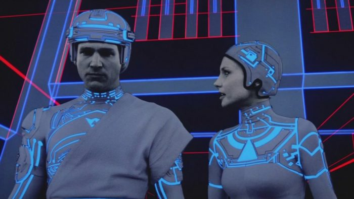

Ready Player One (2018) de Steven Spielberg
Adaptación de la novela de Ernest Cline. Esta película dirigida por Steven Spielberg resultó un tremendo éxito de taquilla. Cuenta con innumerables guiños a películas y videojuegos de los años 80 y 90. Muy entretenida.
|

Jumangi: Bienvenidos a la jungla (2017) de Jake Kasdan
Supone un reboot (reinicio) del Jumanji de 1995. En esta ocasión, el juego detonante de la aventura no es un juego de mesa, sino que se trata de un videojuego. Aunque preferimos el Jumanji de Robin Williams, esta actualización no deja de ser divertida.
|

Scoot Pilgrim contra el mundo (2010) de Edgar Wright
Película que responde a la fórmula "chico conoce chica", pero abordada como si los personajes estuvieran dentro de un videojuego en el cuál el chico tuviera que ir superando niveles (que corresponden a los diferentes exnovios de la chica). Original.
|
Level Five (1997) de Chris Marker
Estamos ante una película de Chris Marker, lo que significa que no estamos ante una obra convencional. La protagonista tiene el encargo de crear un videojuego sobre la batalla de Okinawa. Su evolución psicológica se desarrolla a la par que lo hace dicho videojuego, adoptando progresivamente toda la angustia, locura y desesperación de dicha batalla.
|

Juegos de guerra (1983) de John Badham
3 nominaciones a los Oscar avalan este clásico sobre el tema. Una película nostálgica para muchos de nosotros.
|

TRON (1982) de Steven Lisberger
Aunque el remake de 2010 no está mal, recomendamos su versión original, estrenada en 1982. Más creativa y meritoria.
|